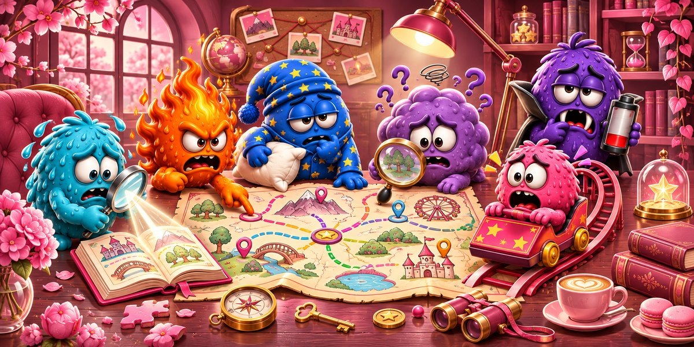

Test de los Villanos
Identifica cuáles se parecen a lo que estás viviendo.
Hacer el testApoyos de la sesión por Zoom
Guarda esta página para después de la sesión. Aquí puedes hacer el test, explorar tu mapa y elegir un primer paso a tu ritmo.

Identifica cuáles se parecen a lo que estás viviendo.
Hacer el testElige el villano que más te afecta y explora cuáles suelen aparecer junto a él.
Explorar mi mapaConsulta las sugerencias para cada villano y elige una acción para esta semana.
Abrir la guía